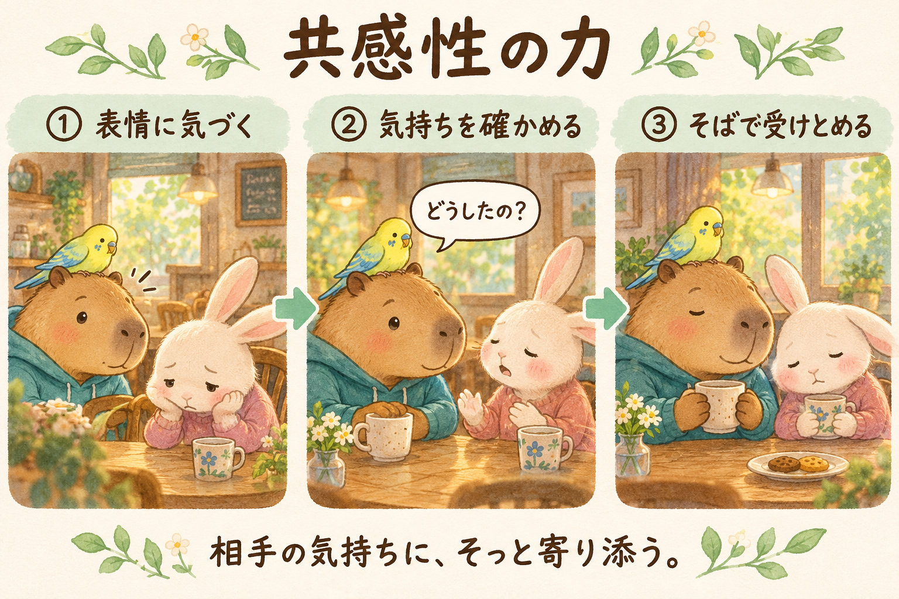

営業から 自分らしいギフトを見つける｜作成：おけもん
「それ、
ふつうじゃないの？」
あなたの“あたりまえ”は、
だれかの「助かった！」
かもしれない。
こんなこと、ない？
その「え？」が、ギフトの入口。
おけもんが、セッションでいつも聞くこと
「あなたは何か普通にしてるけども、周りから感謝されたりとか、すごいって思われたことありませんか？」
すると、ポツポツ出てきます。
そこに、あなたの才能が隠れていたりします。
がんばった覚えがないのに、
感謝されたこと。
今日はそれを、一緒に探します。
営業って、なんだろう
売り込むこと？
助けを届けること？
もともとは「仕事や商売を営むこと」。売り込む、という意味は入っていません。
おけもん自身、知り合いに声をかけるのは「営業とか押し売りみたいな感覚」で、ずっと手が伸びませんでした。
おけもんは、こう捉えています。
営業は、相手に
助けを届けるギフト。
だから最初の問いは「何を売るか」より先に、「自分はもう、どんな助けを届けているか」。
言葉の出どころ（辞書と、おけもんの見方の区別）
『精選版 日本国語大辞典』には1737年『南郭先生文集』の使用例が載っています（確認できる古い用例で、言葉が作られた年ではありません）。現在は、営利を目的とする事業、店が営業すること、販売や受注を担う仕事など、文脈で使われ方が変わります。「ヘルプ」「ギフト」は語源の定義ではなく、おけもんの見方です。
小学館 精選版 日本国語大辞典「営業」↗ 国立国語研究所 IPAL「えいぎょう」↗
今日やること
3つだけ。
- カードを眺める「例えば、こんなケース」を読んで、似た場面を思い出す
- 「自分にもあるかも」に印ぴったりじゃなくてOK。「ちょっとある」で押していい
- 1つ選んで、話す・書くそのとき相手は、なんて言ってた？
- 採点しない。できる・できないで見ない。
- 例は「たとえば」。あなたの場面は、きっと違う形をしている。
- しっくりこないカードは、そのまま通りすぎていい。
両方見ても大丈夫。最後は同じワークに合流します。
受けた人の入口
34資質のカード
自分の資質を押すと、「例えば、こんなケースがあるかも」が開きます。
4つの領域はGallupの分類です。同じ資質でも、出方は人それぞれ。下位の資質が使えない、という意味でもありません。
まだ受けていない人の入口
つい、やっちゃうこと
思い当たるものを押してみてください。いくつでも、ゼロでも。
このリストはCliftonStrengthsの簡易診断ではありません。点数や資質名は出しません。「つい整理する」「変化に気づく」など、自分の言葉のまま持っておけます。
ここで合流
あなたの“あたりまえ”を、1つ。
書いた内容はこの端末の中だけに残ります。どこにも送信されません。書かずに、話すだけでもOK。
つい、やっていることは？
「え、それ普通じゃないの？」と思ったこと。小さい場面でいい。
そのとき、相手はなんて言ってた？
実際に聞いた言葉、見えた表情。思い出せなければ「たぶん」でも。
それ、次は誰に届けたい？
顔が浮かぶ人を1人。届ける前に「いる？」と聞くところまで。
もう少し深めたい人へ（3つの問い）
自分には、何が起きていた？
楽しかったこと、助かったこと、少ししんどかったこと。
どんな傾向が、関係していそう？
受けた人は資質名で。受けていない人は「つい○○する」のままで。経験や関係性も関わります。
仕事にするなら、何を話しておく？
対価・範囲・続けられる条件。断る・保留する選択も残します。
二人で話すとき
答えを当てない。
場面を聞く。
- 「どのカードが、心に残った？」
- 「そのとき、具体的に何をしてた？」
- 「相手は、なんて言ってた？」相手の言葉と、自分の推測は分けて聞く
- 「それ、やってて楽しかった？」
- 「次は、誰にやってみたい？」
「それは○○の資質ですね」と決めずに、「そう考えると、しっくりきますか？」と返します。話したくない所は聞き出さない。うまく届かなかった話も、そのまま置いておけます。
さいごに
おけもん自身の“あたりまえ”
苦手なこと
数字の管理や、細かいことを細かくチェックすること。めちゃくちゃ苦手です。そういう仕事に就いたら、うまくできなくて迷惑をかけるし、誰も幸せになりません。
つい、やってしまうこと
AIを触ること。ストレングスファインダーや自己理解について、考えたり語ったりすること。よだれを垂らしながら「ぜひやらせてください！」と言いたくなります。
それが、周りの方から感謝されたり、仕事に繋がっていったりすることがあるんです。
これが「頑張らなくてもできること」。
「頑張る」＝「苦手なことを克服する」に、なっていませんか？
この資料づくりも、そのひとつ。
共感性：相手が受け取りやすいものにしたい。
最上志向：文字だけより、絵もあって良い体験になるものにしたい。
最後は「受け取りやすかった？」と、みなさんに確かめます。
どの資質が働いたかを断定する例ではなく、おけもん本人が自分の行動を理解するための見方です。

おけもん式ストレングス入門「共感性の力」より。元の解説を読む ↗